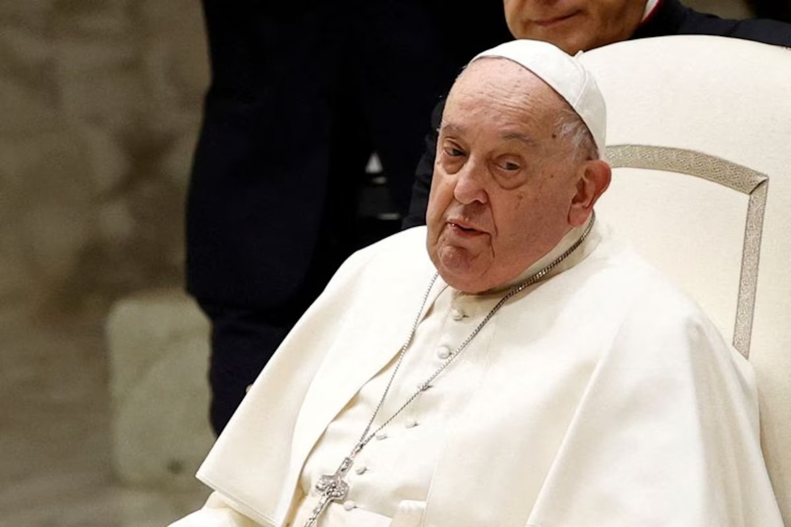
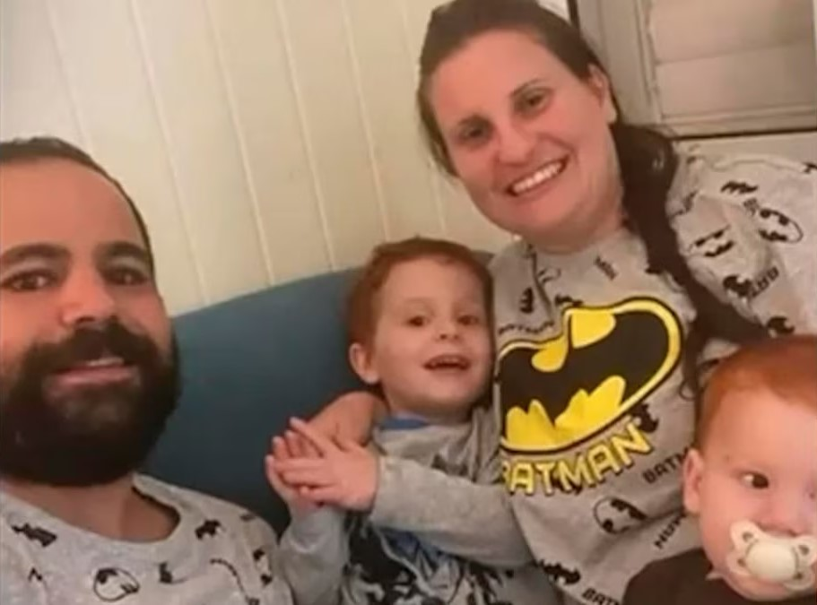
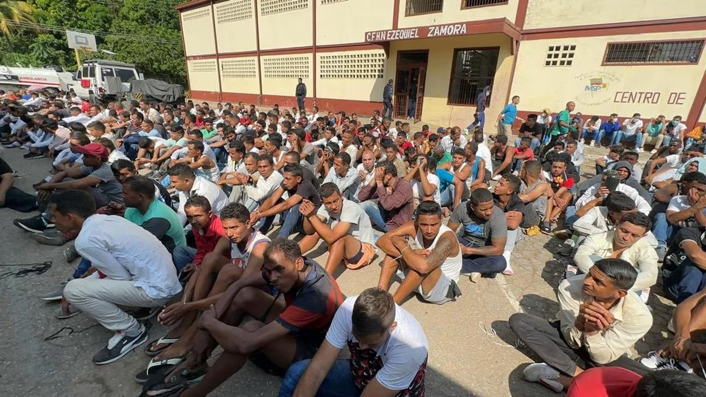

Israel confirmó que Hamas entregará mañana los cuerpos de Shiri Bibas, sus dos hijos Ariel y Kfir Bibas, y Oded Lifshitz
Hamas
Lo anunció la oficina del primer ministro Benjamin Netanyahu. “En estos momentos difíciles, nuestros corazones están con las familias en duelo”, detalló el comunicado oficial
El Vaticano aseguró que los análisis de sangre del papa Francisco muestran una “leve mejoría”
Papa Francisco
“Las condiciones clínicas del Santo Padre se presentan estables”, destacó la Santa Sede
La historia de los Bibas, la familia argentina secuestrada y asesinada por Hamas: la vida en el kibutz y el momento de la captura
Hamas
Los cuerpos de Shiri y de sus hijos Ariel y Kfir serán entregados mañana a las autoridades israelíes en el marco de la primera fase de los acuerdos por el conflicto en la Franja de Gaza. El único sobreviviente de la familia es Yarden, padre de los chicos y pareja de la mujer asesinada, quien había sido liberado el primer día de febrero
Tregua en Gaza: Netanyahu asignó a su Ministro de Asuntos Estratégicos como nuevo líder de la delegación negociadora
Franja de Gaza
Este cambio clave se produce poco después de que Israel confirmara que las conversaciones para la segunda fase comenzarán esta semana
El momento en que el vicegobernador de Mississippi se desmaya en mitad de una sesión en el Senado
Politica internacional
El político se encontraba de pie en el podio cuando se inclinó hacia adelante, segundos antes de desplomarse al suelo
EEUU designará como organizaciones terroristas a los grupos criminales Tren de Aragua, Mara Salvatrucha y siete cárteles del narcotráfico mexicano
EE.UU.
En la lista se encuentran el de Sinaloa, Jalisco Nueva Generación, Cárteles Unidos, el Cártel del Noreste, el del Golfo y la Nueva Familia Michoacana. Muchos de ellos tienen subgrupos, como Los Zetas, Tepalcatepec, Cártel del Abuelo y de Los Reyes